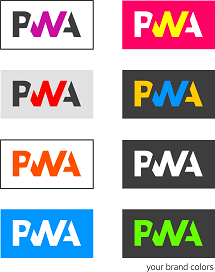

About PWA

PWA (Progressive Web Apps) is one of the most talked about technology shifts in the web and has gained unparalleled momentum among the practitioners in the IT world. If you are building for the web, I’m sure that PWA is the latest ‘buzzword’ that has been added to your work vocabulary. It’s not surprising because PWA has made the far fetched dream of installing web apps on phone for real.